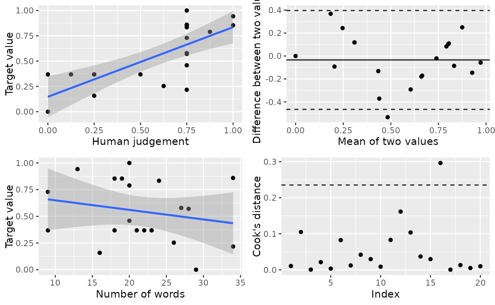

The validation test is called “oolong test” (for reading tea leaves). This package provides several functions for generating different types of oolong test.
| function | purpose |
|---|---|
wi() |
validating a topic model with word intrusion test (Chang et al., 2008) |
ti() |
validating a topic model with topic intrusion test (Chang et al., 2008; aka “T8WSI” in Ying et al. 2021) |
witi() |
validating a topic model with word intrusion test and topic intrusion test |
wsi() |
validating a topic model with word set intrusion test (Ying et al. 2021) |
gs() |
oolong test for creating gold standard (see Song et al., 2020) |
All of these tests can also be generated with the function create_oolong. As of
version 0.3.20, it is no longer recommended.
Installation
Because the package is constantly changing, we suggest using the development version from GitHub:
# install.packages("devtools")
devtools::install_github("chainsawriot/oolong")You can also install the “stable” (but slightly older) version from CRAN:
install.packages("oolong")Validating Topic Models
Word intrusion test
abstracts_seededlda is an example topic model trained
with the data abstracts using the seededlda
package. Currently, this package supports structural topic models /
correlated topic models from stm, Warp LDA models from
text2vec , LDA/CTM models from topicmodels,
Biterm Topic Models from BTM, Keyword Assisted Topic Models
from keyATM, and seeded LDA models from
seededlda. Although not strictly a topic model, Naive Bayes
models from quanteda.textmodels are also supported. See the
section on Naive Bayes for more
information.
library(oolong)
library(seededlda)
#> Loading required package: quanteda
#> Package version: 4.0.2
#> Unicode version: 14.0
#> ICU version: 70.1
#> Parallel computing: disabled
#> See https://quanteda.io for tutorials and examples.
#> Loading required package: proxyC
#>
#> Attaching package: 'proxyC'
#> The following object is masked from 'package:stats':
#>
#> dist
#>
#> Attaching package: 'seededlda'
#> The following object is masked from 'package:stats':
#>
#> terms
library(quanteda)
library(dplyr)
#>
#> Attaching package: 'dplyr'
#> The following objects are masked from 'package:stats':
#>
#> filter, lag
#> The following objects are masked from 'package:base':
#>
#> intersect, setdiff, setequal, union
abstracts_seededlda
#>
#> Call:
#> lda(x = x, k = k, label = label, max_iter = max_iter, alpha = alpha,
#> beta = beta, seeds = seeds, words = NULL, verbose = verbose)
#>
#> 10 topics; 2,500 documents; 3,908 features.To create an oolong test with word intrusion test, use the function
wi. It is recommended to provide a user id of coder who are
going to be doing the test.
oolong_test <- wi(abstracts_seededlda, userid = "Hadley")
oolong_test
#>
#> ── oolong (topic model) ────────────────────────────────────────────────────────
#> ✔ WI ✖ TI ✖ WSI
#> ☺ Hadley
#> ℹ WI: k = 10, 0 coded.
#>
#> ── Methods ──
#>
#> • <$do_word_intrusion_test()>: do word intrusion test
#> • <$lock()>: finalize and see the resultsAs instructed, use the method $do_word_intrusion_test()
to start coding.
oolong_test$do_word_intrusion_test()You can pause the test by clicking the “Exit” button. Your progress
will be recorded in the object. If you want to save your progress, just
save the object
(e.g. saveRDS(oolong_test, "oolong_test.RDS")). To resume
the test, launch the test again.
After the coding (all items are coded), you need to press the “Exit” button to quit the coding interface and then lock the test. Then, you can look at the model precision by printing the oolong test.
oolong_test$lock()
oolong_test
#>
#> ── oolong (topic model) ────────────────────────────────────────────────────────
#> ✔ WI ✖ TI ✖ WSI
#> ☺ Hadley
#> ℹ WI: k = 10, 10 coded.
#>
#> ── Results: ──
#>
#> ℹ 90% precisionWord set intrusion test
Word set intrusion test is a variant of word intrusion test (Ying et
al., 2021), in which multiple word sets generated from top terms of one
topic are juxtaposed with one intruder word set generated similarly from
another topic. In Ying et al., this test is called “R4WSI” because 4
word sets are displayed. By default, oolong generates also R4WSI.
However, it is also possible to generate R(N)WSI by setting the
parameter n_correct_ws to N - 1.
oolong_test <- wsi(abstracts_seededlda, userid = "Garrett")
oolong_test
#>
#> ── oolong (topic model) ────────────────────────────────────────────────────────
#> ✖ WI ✖ TI ✔ WSI
#> ☺ Garrett
#> ℹ WSI: n = 10, 0 coded.
#>
#> ── Methods ──
#>
#> • <$do_word_set_intrusion_test()>: do word set intrusion test
#> • <$lock()>: finalize and see the resultsUse the method $do_word_set_intrusion_test() to start
coding.
oolong_test$do_word_set_intrusion_test()
oolong_test$lock()
oolong_test
#>
#> ── oolong (topic model) ────────────────────────────────────────────────────────
#> ✖ WI ✖ TI ✔ WSI
#> ☺ Garrett
#> ℹ WSI: n = 10, 10 coded.
#>
#> ── Results: ──
#>
#> ℹ 90% precision (WSI)Topic intrusion test
For example, abstracts_seededlda was generated with the
corpus abstracts$text
library(tibble)
abstracts
#> # A tibble: 2,500 × 1
#> text
#> <chr>
#> 1 This study explores the benefits and risks featured in medical tourism broke…
#> 2 This article puts forth the argument that with the transfer of stock trading…
#> 3 The purpose of this study was to evaluate the effect the visual fidelity of …
#> 4 Among the many health issues relevant to college students, overconsumption o…
#> 5 This address, delivered at ICA's 50th anniversary conference, calls on the a…
#> 6 The Internet has often been used to reach men who have sex with men (MSMs) i…
#> 7 This article argues that the literature describing the internet revolution i…
#> 8 This research study examined Bud Goodall's online health narrative as a case…
#> 9 Information technology and new media allow for collecting and sharing person…
#> 10 Using a national, telephone survey of 1,762 adolescents aged 12-17 years, th…
#> # ℹ 2,490 more rowsCreating the oolong test object with the corpus used for training the topic model will generate topic intrusion test cases.
oolong_test <- ti(abstracts_seededlda, abstracts$text, userid = "Julia")
oolong_test
#>
#> ── oolong (topic model) ────────────────────────────────────────────────────────
#> ✖ WI ✔ TI ✖ WSI
#> ☺ Julia
#> ℹ TI: n = 25, 0 coded.
#>
#> ── Methods ──
#>
#> • <$do_topic_intrusion_test()>: do topic intrusion test
#> • <$lock()>: finalize and see the resultsSimilarly, use the $do_topic_intrusion_test to code the
test cases, lock the test with $lock() and then you can
look at the TLO (topic log odds) value by printing the oolong test.
oolong_test$do_topic_intrusion_test()
oolong_test$lock()
oolong_test
#>
#> ── oolong (topic model) ────────────────────────────────────────────────────────
#> ✖ WI ✔ TI ✖ WSI
#> ☺ Julia
#> ℹ TI: n = 25, 25 coded.
#>
#> ── Results: ──
#>
#> ℹ TLO: -0.187Suggested workflow
The test makes more sense if more than one coder is involved. A suggested workflow is to create the test, then clone the oolong object. Ask multiple coders to do the test(s) and then summarize the results.
Preprocess and create a document-feature matrix
tokens(abstracts$text, remove_punct = TRUE, remove_symbols = TRUE, remove_numbers = TRUE, remove_url = TRUE, spilit_hyphens = TRUE) %>% tokens_wordstem %>% tokens_remove(stopwords("en")) %>% dfm(tolower = TRUE) %>% dfm_trim(min_docfreq = 3, max_docfreq = 500) %>% dfm_select(min_nchar = 3, pattern = "^[a-zA-Z]+$", valuetype = "regex") -> abstracts_dfmTrain a topic model.
require(seededlda)
abstracts_seededlda <- textmodel_seededlda(x = abstracts_dfm, dictionary = dictionary(abstracts_dictionary), seeds = 46709394, verbose = TRUE)Create a new oolong object.
oolong_test_rater1 <- witi(abstracts_seededlda, abstracts$text, userid = "Yihui")Clone the oolong object to be used by other raters.
oolong_test_rater2 <- clone_oolong(oolong_test_rater1, userid = "Jenny")Ask different coders to code each object and then lock the object.
## Let Yihui do the test.
oolong_test_rater1$do_word_intrusion_test()
oolong_test_rater1$do_topic_intrusion_test()
oolong_test_rater1$lock()
## Let Jenny do the test.
oolong_test_rater2$do_word_intrusion_test()
oolong_test_rater2$do_topic_intrusion_test()
oolong_test_rater2$lock()Get a summary of the two objects.
summarize_oolong(oolong_test_rater1, oolong_test_rater2)
#>
#> ── Summary (topic model): ──────────────────────────────────────────────────────
#>
#> ── Word intrusion test ──
#>
#> ℹ Mean model precision: 0.25
#> ℹ Quantiles of model precision: 0.2, 0.225, 0.25, 0.275, 0.3
#> ℹ P-value of the model precision
#> (H0: Model precision is not better than random guess): 0.3656
#> ℹ Krippendorff's alpha: 0.747
#> ℹ K Precision:
#> 0, 0.5, 1, 0, 0, 0, 0, 0, 0, 1
#>
#> ── Topic intrusion test ──
#>
#> ℹ Mean TLO: -1.5
#> ℹ Median TLO: -1.12
#> ℹ Quantiles of TLO: -4.71, -2.83, -1.12, 0, 0
#> ℹ P-Value of the median TLO
#> (H0: Median TLO is not better than random guess): 0.114About the p-values
The test for model precision (MP) is based on an one-tailed, one-sample binomial test for each rater. In a multiple-rater situation, the p-values from all raters are combined using the Fisher’s method (a.k.a. Fisher’s omnibus test).
H0: MP is not better than 1/ (n_top_terms + 1)
H1: MP is better than 1/ (n_top_terms + 1)
The test for the median of TLO is based on a permutation test.
H0: Median TLO is not better than random guess.
H1: Median TLO is better than random guess.
One must notice that the two statistical tests are testing the bear minimum. A significant test only indicates the topic model can make the rater(s) perform better than random guess. It is not an indication of good topic interpretability. Also, one should use a very conservative significant level, e.g. .
About Naive Bayes
Naive Bayes model is a supervised machine learning model. This
package supports Naive Bayes models trained using
quanteda.textmodels.
Suppose newsgroup_nb is a Naive Bayes model trained on a
subset of the classic [20 newsgroups] dataset.
tokens(newsgroup5$text, remove_punct = TRUE, remove_symbols = TRUE, remove_numbers = TRUE, remove_url = TRUE, spilit_hyphens = TRUE) %>% tokens_wordstem %>% tokens_remove(stopwords("en")) %>% dfm(tolower = TRUE) %>% dfm_trim(min_termfreq = 3, max_docfreq = 0.06, docfreq_type = "prop") -> newsgroup_dfm
docvars(newsgroup_dfm, "group") <- newsgroup5$title
newsgroup_nb <- textmodel_nb(newsgroup_dfm, docvars(newsgroup_dfm, "group"), distribution = "Bernoulli")You can still generate word intrusion and word set intrusion tests.
wi(newsgroup_nb)
#>
#> ── oolong (topic model) ────────────────────────────────────────────────────────
#> ✔ WI ✖ TI ✖ WSI
#> ℹ WI: k = 20, 0 coded.
#>
#> ── Methods ──
#>
#> • <$do_word_intrusion_test()>: do word intrusion test
#> • <$lock()>: finalize and see the results
wsi(newsgroup_nb)
#>
#> ── oolong (topic model) ────────────────────────────────────────────────────────
#> ✖ WI ✖ TI ✔ WSI
#> ℹ WSI: n = 20, 0 coded.
#>
#> ── Methods ──
#>
#> • <$do_word_set_intrusion_test()>: do word set intrusion test
#> • <$lock()>: finalize and see the resultsValidating Dictionary-based Methods
Creating gold standard
trump2k is a dataset of 2,000 tweets from
@realdonaldtrump.
tibble(text = trump2k)
#> # A tibble: 2,000 × 1
#> text
#> <chr>
#> 1 "In just out book, Secret Service Agent Gary Byrne doesn't believe that Croo…
#> 2 "Hillary Clinton has announced that she is letting her husband out to campai…
#> 3 "\"@TheBrodyFile: Always great to visit with @TheBrodyFile one-on-one with \…
#> 4 "Explain to @brithume and @megynkelly, who know nothing, that I will beat Hi…
#> 5 "Nobody beats me on National Security. https://t.co/sCrj4Ha1I5"
#> 6 "\"@realbill2016: @realDonaldTrump @Brainykid2010 @shl Trump leading LA Time…
#> 7 "\"@teapartynews: Trump Wins Tea Party Group's 'Nashville Straw Poll' - News…
#> 8 "Big Republican Dinner tonight at Mar-a-Lago in Palm Beach. I will be there!"
#> 9 ".@HillaryClinton loves to lie. America has had enough of the CLINTON'S! It …
#> 10 "\"@brianstoya: @realDonaldTrump For POTUS #2016\""
#> # ℹ 1,990 more rowsFor example, you are interested in studying the sentiment of these
tweets. One can use tools such as AFINN to automatically extract
sentiment in these tweets. However, oolong recommends to generate gold
standard by human coding first using a subset. By default, oolong
selects 1% of the origin corpus as test cases. The parameter
construct should be an adjective, e.g. positive, liberal,
populistic, etc.
oolong_test <- gs(input_corpus = trump2k, construct = "positive", userid = "Joe")
oolong_test
#>
#> ── oolong (gold standard generation) ───────────────────────────────────────────
#> ☺ Joe
#> ℹ GS: n = 20, 0 coded.
#> ℹ Construct: positive.
#>
#> ── Methods ──
#>
#> • <$do_gold_standard_test()>: generate gold standard
#> • <$lock()>: finalize this object and see the resultsAs instructed, use the method $do_gold_standard_test()
to start coding.
oolong_test$do_gold_standard_test()After the coding, you need to first lock the test and then the
$turn_gold() method is available.
oolong_test$lock()
oolong_test
#>
#> ── oolong (gold standard generation) ───────────────────────────────────────────
#> ☺ Joe
#> ℹ GS: n = 20, 20 coded.
#> ℹ Construct: positive.
#>
#> ── Methods ──
#>
#> • <$turn_gold()>: convert the test results into a quanteda corpusExample: Validating AFINN using the gold standard
A locked oolong test can be converted into a quanteda-compatible
corpus for further analysis. The corpus contains two
docvars, ‘answer’.
oolong_test$turn_gold()
#> Corpus consisting of 20 documents and 1 docvar.
#> text1 :
#> "Thank you Eau Claire, Wisconsin. #VoteTrump on Tuesday, Apr..."
#>
#> text2 :
#> ""@bobby990r_1: @realDonaldTrump would lead polls the second ..."
#>
#> text3 :
#> ""@KdanielsK: @misstcassidy @AllAboutTheTea_ @realDonaldTrump..."
#>
#> text4 :
#> "Thank you for a great afternoon Birmingham, Alabama! #Trump2..."
#>
#> text5 :
#> ""@THETAINTEDT: @foxandfriends @realDonaldTrump Trump 2016 ht..."
#>
#> text6 :
#> "People believe CNN these days almost as little as they belie..."
#>
#> [ reached max_ndoc ... 14 more documents ]
#> ℹ Access the answer from the coding with quanteda::docvars(obj, 'answer')In this example, we calculate the AFINN score for each tweet using
quanteda. The dictionary afinn is bundle with this
package.
gold_standard <- oolong_test$turn_gold()
gold_standard %>% tokens(remove_punct = TRUE) %>% dfm() %>% dfm_lookup(afinn) %>%
quanteda::convert(to = "data.frame") %>%
mutate(matching_word_valence = (neg5 * -5) + (neg4 * -4) + (neg3 * -3) + (neg2 * -2) + (neg1 * -1)
+ (zero * 0) + (pos1 * 1) + (pos2 * 2) + (pos3 * 3) + (pos4 * 4) + (pos5 * 5),
base = ntoken(gold_standard, remove_punct = TRUE), afinn_score = matching_word_valence / base) %>%
pull(afinn_score) -> all_afinn_score
all_afinn_score
#> text1 text2 text3 text4 text5 text6
#> 0.33333333 -0.09090909 -0.16666667 0.45454545 0.00000000 0.00000000
#> text7 text8 text9 text10 text11 text12
#> 0.16666667 0.38461538 0.00000000 0.38461538 -0.29166667 0.00000000
#> text13 text14 text15 text16 text17 text18
#> 0.50000000 0.07142857 0.00000000 -0.12000000 0.28571429 0.16000000
#> text19 text20
#> 0.36842105 0.38888889Put back the vector of AFINN score into the respective
docvars and study the correlation between the gold standard
and AFINN.
summarize_oolong(oolong_test, target_value = all_afinn_score)
#> New names:
#> `geom_smooth()` using formula = 'y ~ x'
#> `geom_smooth()` using formula = 'y ~ x'
#>
#> ── Summary (gold standard generation):
#> ─────────────────────────────────────────
#> ℹ Correlation: 0.718 (p = 4e-04)
#> ℹ Effect of content length: -0.323 (p = 0.1643)
#> • `` -> `...1`Suggested workflow
Create an oolong object, clone it for another coder. According to Song et al. (2020), you should at least draw 1% of your data.
trump <- gs(input_corpus = trump2k, exact_n = 40, userid = "JJ")
trump2 <- clone_oolong(trump, userid = "Winston")Instruct two coders to code the tweets and lock the objects.
trump$do_gold_standard_test()
trump2$do_gold_standard_test()
trump$lock()
trump2$lock()Calculate the target value (in this case, the AFINN score) by turning one object into a corpus.
gold_standard <- trump$turn_gold()
gold_standard %>% tokens(remove_punct = TRUE) %>% dfm() %>%
dfm_lookup(afinn) %>% quanteda::convert(to = "data.frame") %>%
mutate(matching_word_valence = (neg5 * -5) + (neg4 * -4) + (neg3 * -3) + (neg2 * -2) + (neg1 * -1)
+ (zero * 0) + (pos1 * 1) + (pos2 * 2) + (pos3 * 3) + (pos4 * 4) + (pos5 * 5),
base = ntoken(gold_standard, remove_punct = TRUE), afinn_score = matching_word_valence / base) %>%
pull(afinn_score) -> target_valueSummarize all oolong objects with the target value.
res <- summarize_oolong(trump, trump2, target_value = target_value)
#> New names:
#> `geom_smooth()` using formula = 'y ~ x'
#> `geom_smooth()` using formula = 'y ~ x'
#> • `` -> `...1`
#> • `` -> `...2`Read the results. The diagnostic plot consists of 4 subplots. It is a good idea to read Bland & Altman (1986) on the difference between correlation and agreement.
- Subplot (top left): Raw correlation between human judgement and target value. One should want to have a good correlation between the two.
- Subplot (top right): Bland-Altman plot. One should want to have no correlation. Also, the dots should be randomly scattering around the mean value. If it is so, the two measurements (human judgement and target value) are in good agreement.
- Subplot (bottom left): Raw correlation between target value and content length. One should want to have no correlation, as an indication of good reliability against the influence of content length. (See Chan et al. 2020)
- Subplot (bottom right): Cook’s distance of all data point. One should want to have no dot (or at least very few dots) above the threshold. It is an indication of how the raw correlation between human judgement and target value can or cannot be influenced by extreme values in your data.
The textual output contains the Krippendorff’s alpha of the codings by your raters. In order to claim validity of your target value, you must first establish the reliability of your gold standard. Song et al. (2020) suggest Krippendorff’s Alpha > 0.7 as an acceptable cut-off.
res
#>
#> ── Summary (gold standard generation): ─────────────────────────────────────────
#> ℹ Krippendorff's Alpha: 0.931
#> ℹ Correlation: 0.744 (p = 2e-04)
#> ℹ Effect of content length: -0.323 (p = 0.1643)
plot(res)
Backward compatibility
Historically, oolong test objects could only be generated with only
one function: create_oolong. It is no longer the case and
no longer recommended anymore. It is still retained for backward
compatibility purposes. If you still need to use
create_oolong(), the most important parameters are
input_model and input_corpus. Setting each of
them to NULL generates different tests.
| input_model | input_corpus | output |
|---|---|---|
| Not NULL | NULL | oolong test for validating a topic model with word intrusion test |
| Not NULL | Not NULL | oolong test for validating a topic model with word intrusion test and topic intrusion test |
| NULL | Not NULL | oolong test for creating gold standard |
| NULL | NULL | error |
References
- Chang, J., Gerrish, S., Wang, C., Boyd-Graber, J. L., & Blei, D. M. (2009). Reading tea leaves: How humans interpret topic models. In Advances in neural information processing systems (pp. 288-296). link
- Ying, L., Montgomery, J. M., & Stewart, B. M. (2021). Inferring concepts from topics: Towards procedures for validating topics as measures. Political Analysis. link
- Song et al. (2020) In validations we trust? The impact of imperfect human annotations as a gold standard on the quality of validation of automated content analysis. Political Communication. link
- Bland, J. M., & Altman, D. (1986). Statistical methods for assessing agreement between two methods of clinical measurement. The lancet, 327(8476), 307-310.
- Chan et al. (2020) Four best practices for measuring news sentiment using ‘off-the-shelf’ dictionaries: a large-scale p-hacking experiment. Computational Communication Research. link
- Nielsen, F. Å. (2011). A new ANEW: Evaluation of a word list for sentiment analysis in microblogs. arXiv preprint arXiv:1103.2903. link